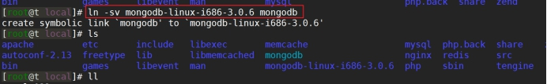
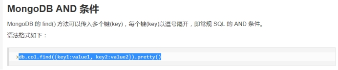
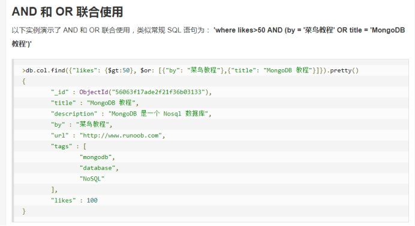
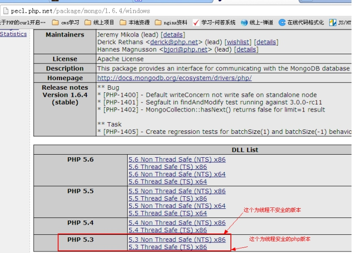
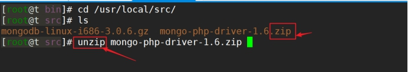
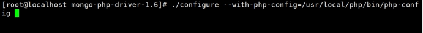
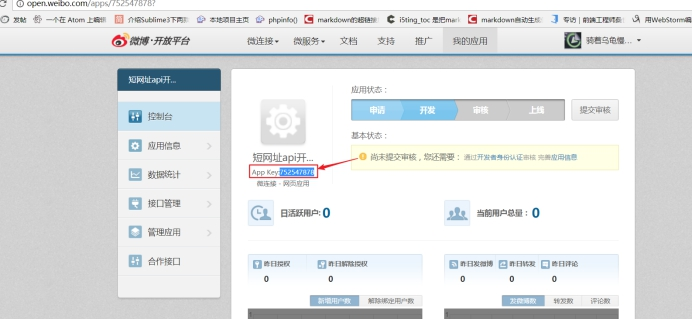
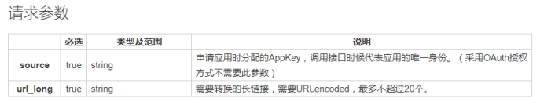
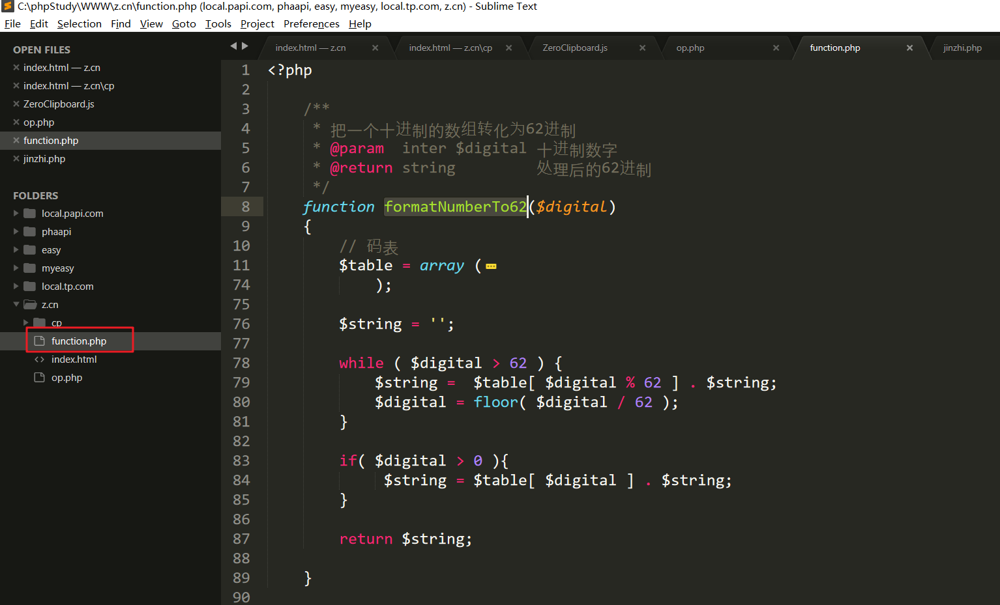
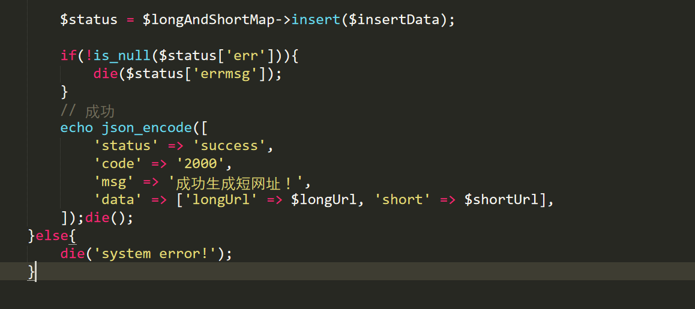

mongoDB
mongodb，也叫作文档型的数据库，一般来说对于我们PHP，这个数据库的使用量还是偏少一点，一般来说我们使用的更多的是memcache和Redis。mongodb一般还是配合前端的javascript工程师和nodejs工程师进行开发使用，一般都将这个数据库做数据存储的仓库。我们PHP后端一般还是习惯用mysql作为数据存储的仓库，一般来说我们PHP程序员习惯使用mongodb存储一些日志信息，例如我们的网站里面做发送短信的业务，用来记录发送了哪些短信。
简介
mongoDB 被称为文档型数据库，当然也叫Nosql数据库。
Nosql数据库：
没有表的概念，没有行和列的概念，即没有二维表
没有sql查询，一般都是自己有相关的查询api，例如mongodb就是使用的javascript的api进行数据的处理，所以对于javascript工程师来说，掌握mongodb是很轻松。
关系型数据库：
- 由行和列构成的一张二维表被称为实体。实体和实体之间的关系，被称为E_R模型，则就是关系型数据库的理论基础。
| id | username | password | address | gender | classid | |
|---|---|---|---|---|---|---|
| 1 | caoyang | admin88 | gogery@173.com | shanghaishi | m | 3 |
| 2 | andy | admin88 | caoyang@173.com | guangzhoushi | m | 4 |
其他的表
| classid | class_name | class_markup | class_address | |
|---|---|---|---|---|
| 3 | php23 | PHP最牛的班级 | 312 | …. |
| 4 | java | Java还可以吧 | 213 | …. |
所以，现在的nosql数据库并不适合做关系很复杂的业务，不好去做连表类型的业务。nosql更多就是一个数据的仓库，不适合做连表业务。
如果我们希望非关系型数据库去处理这种关系型的业务，该如何处理？
答：通过==增加冗余的信息==来保证数据的完整性。如果使用非关系型数据库到时候会导致数据量非常大。冗余数据的增加带来的弊端就是磁盘要使用更多，好处也是显而易见，查询更加的便捷，一条查询把所有的数据全部搞定，不需要进行连表业务。
注意：由于mongodb的特性（底层使用json格式的数据进行存储，如果我们严格的规定了json的key=>value对，则看起来想一个行和列构成的二维结构），很像一个关系型的数据库（设计字段），所以有的人尝试把它当成关系型数据库进行使用，然后存在了很多的数据，但是它毕竟不是关系型数据库，所以后期如果需要把mongodb转存到关系型数据库里面，发现实际不可行的。一般这时候都是 mysql + mongodb 一起配合，千万不要mongodb使用在前。
mongodb被为文档型数据库
可以这样理解：文档型的数据库存储的数据格式就是经过特殊处理的json格式的数据，存储的载体是文档，专业术语叫做Bson。
简单的理解，Bson比原先的json多了一些数据类型，或者说是数据类型的格式更加的规范，严苛，例如存储的浮点数的精度更加的高。
特点：
mongodb内部使用js解释引擎来实现数据的分析 。现在还是使用的和chrome浏览器相同的引擎，是现在javascript最厉害的引擎，v8引擎 和我们Nodejs内部的js引擎是一样。
在插入的时候，将数据转换成二进制的Bson来存储；在查询的时候，将数据Bson转换成json对象返回。
现在出了v8引擎，还有其他的很多的引擎，trident、xxmonkey。
http://www.paopaoche.net/soft/77495.html
mongodb与传统关系型数据（MySQL）有什么区别？
| 名称 | 库 | 表 | 行 | 操作 |
|---|---|---|---|---|
| mongodb | 数据库 | collection (集合) | document 文档json格式的数据 | js面向对象 db.users.find() |
| mysql | 数据库 | 表 | 记录 | sql操作select * from user where id > 1 |
mysql:
| id | username | password | |
|---|---|---|---|
| 12 | caoyang | admin88 | a2@sina.cn |
| 13 | caoyang | admin88 |
可以使用一个bson来描述上面的信息
1 | [ |
扩展：
什么是GeoJson？topjson?
答：GeoJson 翻译过来是 地理信息的json格式数据。和普通的json的格式稍有一定区别。
普通json格式的数据的如下：
1 | { |
但是GeoJson里面的key-value的key是受到==严格==的限制的，只能使用固定好的key。

网站：
http://echarts.baidu.com/demo.html#map-china-dataRange
http://echarts.baidu.com/echarts2/doc/example/map20.html
http://www.osgeo.cn/info/270ce
https://blog.csdn.net/lzhlzz/article/details/41347929
可能做图表。
安装
下载对应的稳定版源代码，并放置到（/usr/local/src目录下）
中文手册：http://www.runoob.com/mongodb/mongodb-tutorial.html
阿里云的mongodb的镜像：https://mirrors.aliyun.com/mongodb/
- 上传、解压文件（/usr/local/src/）
解压安装包
然后将mongodb源码移动到上级目录下
- 为mongodb创建一个==符号链接==

- 查看一下bin目录的命令

- 我们通过常看README文件或者帮助命令
查看帮助

启动服务：
a. 创建db文件夹，保存mongodb运行时候的数据库信息

b. 启动服务
参数的解释：
--dbpath: 表示是数据库保存的目录
--logpath: 表示是日志文件log.txt
--fork: 表示该服务在后台运行
- 停止，关闭mongodb，使用kill 命令，不要使用pkill。
- 连接服务端，使用mongo客户端进行连接。

- 简单的使用：只需要遵循js语法，基本都可以使用。能使用的只是ECMAScript定义的函数

==mongoDB使用==（重要）
入门命令
学习文档：
http://www.runoob.com/mongodb/mongodb-create-database.html
show dbs查看所有的数据库
1 | > show dbs; |
use databaseName选库MongoDB可以隐式的创建，直接
use databaseNAME可以创建一个数据库
1 | > use php32; |
- 查看当前数据库下的集合
show tables查看当前库下的数据表show collections也可以查看
1 | > use php33; |
库操作
创建数据库
mongoDB的库是隐式创建，当use 一个不存在的库的时候，然后在该库下创建collection后即可创建数据库。
1 | > use php32; |
注意：
a. 使用use 选择一个数据库，这个数据库可以不存在，当在这个数据库下创建集合的时候，则对应的数据库创建成功，使用 show dbs 进行查看当前系统所有的数据库时，才能显示当前库。
1 | > db.createCollection("students"); |
注意：db.createCollection("students"); 中 db表示当前切换的数据库 php32， createCollection表示在当前数据库创建一个集合，集合的名称为 students ，当创建该集合后，则可以使用 show dbs 查看系统所有的数据库信息，也可以使用 show tables 查看当前数据库下的集合信息。
1 | > show tables; |
其中的students 表示我们刚才创建的集合，system.indexes是系统内部维护的集合。
创建表
- 显式创建
1 | > db.createCollection("order") |
- 隐式创建
1 | > db.myClass.insert({"name":"phpLearn", "classInfo": "PHP学习"}); |
这里的myClass是用户自定义的集合名称，当不存在的集合里在插入数据的时候，隐式的创建该集合
集合查看
show tables查看当前数据库下的表show collections也可以查看当前数据库下的表
1 | > show tables; |
show tables 和 show collections 完全等价。
删除表
db.collectionName.drop()删除表
1 | > db.students.drop(); |
这里的students表示的是集合名称，用户可以换成自己要删除的集合名称。
删除数据库
1 | > db.dropDatabase(); |
数据操作
基本增删改查命令
find()查看
1 | > use php31; |
db表示的是当前数据库 php31
students表示当前数据库下的集合，用户可以换成自己的集合名称
find表示查看所有的记录信息
上面的的：db.stuendts.find();类似下面的SQL语句：
select * from collectionName;
备注：可以在find方法后面在使用pretty()方法，将取出的数据以一个优雅的格式显示。
1 | > db.stuendts.find().pretty(); |
增加数据 insert
1 | > db.collectionName.isnert(document); |
注意：document可以是一个js对象，表示是单条记录插入; 也可以是一个数组，数组里面的每个元素又是一个js对象，表示是多条记录插入。
例如：
单条记录
1 | > db.collectionName.insert({_id:5, age:18, name:’asion’}); |
多条记录
1 | > db.collectionName.insert( |
删除数据 remove
一般来说我们做删除的时候，肯定要设置删除的条件。
1 | > db.collectionName.remove(查询表达式, 选项); |
选项 是指 {justOne:true/false}, 是否只删一行，默认为false
等同于
delete from tableName where id > 1 limit 1;
注意
1: 查询表达式依然是个json对象
2: 查询表达式匹配的集合，将被删掉
3: 如果不写查询表达式，tables中的所有文档将被删掉
例1: 删除students表中 sn属性值为’001’的数据
1 | > db.students.remove({sn:'001'}); |
例2: 删除students表中gender属性为m的文档，只删除1行
1 | > db.students.remove({gender:'m'},{justOne:true}); |
修改数据 update
1 | # db.collectionName.update(查询表达式, 新值) |
等同于
udpate collectionName set name = ‘asion’ where id = 1;
例如: 现在需要将name为asion的文档的用户名改为caoyang
1 | # db.news.update({name:'asion'},{name:'caoyang'}); |
结果: 文档中的其他列不见了，改后只有_id和name列数据
注意–>新值直接替换了旧值，而不是修改，将我们设置的值做了一个全部的替换
所以，如果是想修改数据的某列，可以用$set关键字
1 | # db.collectionName.update({name:'asion'}, { $set:{name:'caoyang'} }) |
$set：表示当前的操作是一个更新，而不是替换。
查询数据 find、 findOne
find和findOne都是用来做数据查询的，但是find是显示所有的数据，findOne是查询单条数据的。同时在查询的时候，可以指定==查询的条件==和==显示的字段==信息。
1 | > db.collection.find(查询表达式, 显示的列); |
例1:查询students所有数据
1 | > db.stuendts.find() |
例2: db.students.find({},{name:1})
{} 表示取出所有
查询所有文档数据，但是只显示name列数据 (_id属性默认总是查出来)
1 | > db.stuendts.find({}, {"name":1}); |
例3: 查看所有文档指定字段。
查询所有文档数据，但是只显示name列信息，且不显示_id列信息
1 | > db.stuendts.find({}, {"name":1, "_id": 0}); |
例4: 查看单条记录信息
查询所有name值为andy的数据，但是只显示name这列信息，并且只获取一条文档。
1 | > db.stuendts.findOne({"name": "andy"}, {"name": 1, "_id": 0}); |
在查询的时候，除了 = 是否还存在其他的查询运算符，例如 > >= < …..
参考http://www.runoob.com/mongodb/mongodb-operators.html
==Mongodb高级查询技巧-单一条件==
文档：http://www.runoob.com/mongodb/mongodb-operators.html
一般的业务还是查询比较多，写的相当来说少一些。
大于查询
# db.collectionName.find({"查询字段的名称" : {操作符 : 查询值} })
例如：查询用户的年龄大于 20的用户的用户名和年龄信息
1 | > db.stuendts.find({"age": {"$gt": 12}}, {"name": 1, "age": 1, "_id":0}); |
等同于
select name, age from students where age > 12;
小于查询
1 | > db.stuendts.find({"age": {"$lt": 45}}); |
等同于
select * from students where age < 45;
小于等于查询
1 | > db.stuendts.find({"age": {"$lte": 45}}); |
等同于
select * from students where age <= 45;
==Mongodb高级查询技巧-多条件处理==
mongodb的and操作

db.collectionName.find({key1: value1, 'key2': value2});
mongodb的or操作


mongodb的and和or

例如数据库里面存在用户的信息，获取用户的年龄是成年，同时籍贯为湖北或者湖南的。
age >= 18 and ( jiguan = '湖北' or jiguan='湖南' )
( age>= 18 and jiguan=’湖南’ ) or (age>=18 and jigaun=’湖北’) 更符合人类的阅读
http://www.runoob.com/mongodb/mongodb-query.html
==php操作mongoDB==
一般是用php作为客户端来操作mongodb，对我们php程序员来说很少使用CLI。
windows下安装
下载源码
- 点击对应的【dll：dynamic link library 动态链接 ，window用来操作mongodb的扩展文件】

- 选择合适的php版本，这个时候需要注意的是，选择版本的时候，存在php线程和非线程安全的选择。

线程安全信息如何查看？
答：使用phpinfo函数，进行查看如下信息

含义：

- 复制上面压缩包里面的两个文件到php的ext目录

修改php.ini文件，phpinfo查看配置文件所在路径
- 必须重启，建立一个phpinfo() ，见到如下信息，表示成功
Linux下安装-php5.3
可视化操作mongodb的客户端（Redis也存在这种可视化的客户端）
https://blog.csdn.net/zhengalen/article/details/51464513
https://www.cnblogs.com/shiweida/p/7692468.html
https://www.cnblogs.com/aimu/p/7047671.html
- 上传扩展包到 /usr/local/src

解压【注意：这个是一个zip包，不需要进行tar方法解压，使用 unzip解压即可】

注意：如果zip命令无法使用，则使用如下的命令进行安装
> yum install -y unzip zip
- 执行phpize命令
执行上面的操作后，利用生成的configure文件，收集操作系统和php-config命令的信息

- 执行
make && make install

- 执行上面的操作后，会在如下的目录生成一个.so文件

- 修改php.ini

- 在test.php里面使用 phpinfo函数测试
创建测试文件
下面的这个语法是：php5.3里面的 pdo链接方式 dsn: data source name
扩展
mongodb的权限验证机制
http://blog.csdn.net/lk10207160511/article/details/50281883
案例：Mongodb实现短网址
简介
将一个非常长的URL地址转换为一个比较短的URL地址。主要为了用户的一个体验，因为短的信息美观一些。同时也可以达到隐藏url地址信息，有的时候我们可以不希望用户直接看到url里面包含的信息，或者有的时候出于某些操作可能根不希望别人看到。
一般在微博里面最常见。有的时候手机的短信也可以收到类似的url地址。
体验地址：
效果：

实现技术点：
- 用户先输入一个长的网址，然后发送ajax请求去后台生成短的网址
- 到时候后台会保存一个 短网址 和 长网址 的对应关系 【使用mongodb进行映射关系数据的存储】
- 当用户利用短网址去访问的时候，短网址的服务器先判断短网址是否在本地的数据库里面存在，如果存在则取出后使用php的header(‘location:长URL’, 302)函数做一个跳转即可完成。【302：临时重定向】
新浪微博短网址api使用
现在如果实际是自己的公司要做这样的分享网址的业务，那么我们自己该如何处理呢？
答：
- 自己是否存在短的域名
- 使用第三方的API进行生成【短网址最先从新浪的微博演变过来的，因为微博在设计的时候，只能发送140个文字】

微信开发平台现在也支持短网址的操作。
api文档：http://open.weibo.com/wiki/Short_url/shorten
一款开源的PHP程序，让你可以轻松建立属于自己的短网址生成系统 【https://c7sky.com/yourls.html】
已知新浪有提供类似的API。
- 成为新浪的开发者【身份证信息】
- 创建应用（获取到appkey）

appkey： 752547878
- 根据文档进行接口调用，提供了两种方式的url请求

a) xml格式数据
b) json格式的数据

用户自定义开发思路分析
通过上面的操作，我们可以使用别人提供的API进行短网址的生成，但是我们现在处于学习，我们可以自己去实现一个短网址的转换项目。自己在本地定义一个域名(hosts文件里面定义即可 例如：b.cn)
思路：
- 短网址必须唯一，一 一对应。可以参考MySQL的主键ID，即可以自增，也可以唯一
- 网址必须短，但是需要存储的信息多。这个时候可以使用进制实现，进制可以实现使用较少的位数来保存更多的信息。
- 短网址尽量乱，无规律。防止发现规律后批量请求。
统一现在规定短网址的位数在6位，查看一下不同进制下可以保存的所有的短网址的信息：
二进制 111111 2^6
八进制 777777 8^6
十六进制 FFFFFF F 16^6
六十二进制 62^6

使用6位的62进制最多可以表示出500多亿种状态。

使用62进制在处理的时候，不能体现出规律性。则我们需要设计出一个自己的码表。之前我们使用的16进制，可以使用 0-9 A-F 来表示10进制的 0-15 这个16个数，则现在我们的62进制，则也需要使用62个字符来表示我们10进制的0-61。
去哪里找出62个字符进行替代？
0-9：十个阿拉伯数字
a-z：26个字符
A-Z：26个字符
正好为 62 个字符，所以我们可以使用上面的 字符行为一个码表。
| 序号 | 62进制 | 10进制 |
|---|---|---|
| 1 | 0 | 0 |
| 2 | 1 | 1 |
| 3 | 2 | 2 |
| 4 | 3 | 3 |
| 6 | 5 | 5 |
| 7 | 6 | 6 |
| 8 | 7 | 7 |
| 9 | 8 | 8 |
| 10 | 9 | 9 |
| 11 | a | 10 |
| 12 | b | 11 |
| 13 | c | 12 |
| … | …. | … |
| 60 | Y | 60 |
| 61 | Z | 61 |
62进制：ZY
10进制为：6162^1 + 60 62^0
问题：为什么要使用62进制来设计短网址了吗？
答：进制大，短表示更多的可能性。
主键id和进制代码实现
==代码实现的思路：==
首先 生成一个唯一的数字，然后把这个唯一的数字转换为62进制。
mongodb里面提供一个全局计算器，可以帮我们生成唯一的整数，理解成mysql里面的自增型的主键id。用户输入的一个长的url地址应该对应一个唯一的短的url地址。
实现：
http://www.runoob.com/mongodb/mongodb-autoincrement-sequence.html

演示：
- 创建一个集合，集合里面存在两个字段
1 | > use short |
实现每调用一次，先获取对应的自增id 然后把对应的值自增一下。然后将自增的id转化为对应的短网址。
变短的62进制和域名的前缀进行拼接
定义码表

转换函数

代码实现
前台效果
- 创建一个 输入长网址转换为短网址的页面

效果

- 完成页面的ajax提交事件
复制按钮
a) 复制静态资源到z.cn目录

b) 在index.html页面修改短网址框的val值 和 点击复制按钮的ID，并引入插件包

引入插件并定义复制函数

在完成ajax请求后进行复制函数调用

后台处理
在function.php定义好进制转换函数

在后台op.php生成短网址和长网址的映射关系

- 如果存在则直接返回

- 不存在则生成

短网址访问
- 定义伪静态规则，开启Apache的rewrite模块

- 开启虚拟主机的重写

- 在网站根目录创建.htaccess文件

内容如下：

- 在b.cn/s目录创建一个index.php完成跳转